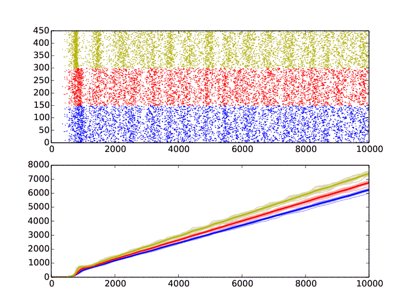

Python and NEURON scripts for running network simulations of reduced-morphology layer V pyramidal cells.
Tuomo Maki-Marttunen, 2015-2017
CC BY 3.0
HOC-commands for simulations including in vivo-like synaptic firing based on (Hay & Segev 2015, "Dendritic excitability and gain control
in recurrent cortical microcircuits", Cerebral Cortex
25(10): 3561-3571)
Files included:
models/TTC.hoc #HOC-file for simulations with reduced-morphology model and in vivo-like
# synaptic inputs, synapses grouped to gain speed in simulations.
models/TTC_det.hoc #HOC-file for simulations with reduced-morphology model and in vivo-like
# synaptic inputs, synapses grouped to gain speed in simulations. The
# activation times are predetermined and given to the synapse model as
# parameters (this is needed when using non-stationary Poisson inputs).
CaDynamics_E2.mod #mod-file for Ca2+ dynamics. From http://modeldb.yale.edu/139653
Ca_HVA.mod #mod-file for HVA Ca2+ currents. From http://modeldb.yale.edu/139653
Ca_LVAst.mod #mod-file for LVA Ca2+ currents. From http://modeldb.yale.edu/139653
Ih.mod #mod-file for HCN currents. From http://modeldb.yale.edu/139653
Im.mod #mod-file for Muscarinic K+ currents. From http://modeldb.yale.edu/139653
K_Pst.mod #mod-file for Persistent K+ currents. From http://modeldb.yale.edu/139653
K_Tst.mod #mod-file for Transient K+ currents. From http://modeldb.yale.edu/139653
NaTa_t.mod #mod-file for Transient Na+ currents. From http://modeldb.yale.edu/139653
Nap_Et2.mod #mod-file for Persisent Na+ currents. From http://modeldb.yale.edu/139653
ProbAMPANMDA2.mod #mod-file for AMPA-NMDA synapses. From http://modeldb.yale.edu/156780
ProbAMPANMDA2group.mod #mod-file for AMPA-NMDA synapse groups. Modified from ProbAMPANMDA2.mod.
ProbAMPANMDA2groupdet.mod #mod-file for AMPA-NMDA synapse groups with predetermined order of synapse activation.
ProbUDFsyn2.mod #mod-file for GABA synapses. From http://modeldb.yale.edu/156780
ProbUDFsyn2group.mod #mod-file for GABA synapse groups. Modified from ProbUDFsyn2.mod.
ProbUDFsyn2groupdet.mod #mod-file for GABA synapse groups with predetermined order of synapse activation.
SK_E2.mod #mod-file for SK currents. From http://modeldb.yale.edu/139653
SKv3_1.mod #mod-file for Kv3.1 currents. From http://modeldb.yale.edu/139653
extrapas.mod #mod-file for an additional glutamatergic passive conductance.
approxhaynetstuff.py #Python file for setting the synaptic parameters of reduced-morphology neurons in
# parallel simulations
approxhaynetstuff_nonparallel.py #Python file for setting the synaptic parameters of reduced-morphology neurons in
# non-parallel simulations
calculate_spike_trains.py #Python file for running the network (N=150) simulations and saving the resulting
# spike trains
drawcumfr.py #Python file for drawing spike trains and cumulative firing rate curves from network
# (N=150) simulations
mytools.py #Python file for general utilities
pars_withmids_combfs_final.sav #Final parameter set from the four fitting steps
simseedburst_func_nonparallel_nonadaptive_allions.py #Python library for running the network (or single-cell) simulations
To perform network simulations, run the following commands
nrnivmodl #Compile the NEURON mechanisms
python calculate_spike_trains.py #Run 14 repetitions of network simulations with three different intra-network synaptic strengths.
# This is extremely slow (each of the 42 simulations may take 2-4 hours to finish). If possible,
# divide to threads and run "python calculate_spike_trains.py $i", where i goes from 0 to 41.
python drawcumfr.py #Plot the results
These scripts reproduce Figure 8A-B (only for the model with reduced morphology and reduced number of synapses) in
Mäki-Marttunen T, Halnes G, Devor A, Metzner C, Dale AM, Andreassen OA, Einevoll GT (2017): "A stepwise
neuron model fitting procedure designed for recordings with high spatial resolution, application to layer V pyramidal cells".
